Bu Hafta En Çok İzlenen Nasıl Yapılır Videoları
-
Telefonun Şarjının Uzun Gitmesi İçin 9 Yol
795 izlenme 1 gün önce -
Kafa Kesme Hilesi
648 izlenme 2 gün önce -
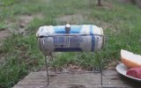
Kutu Biradan Barbekü Yapmak
508 izlenme 4 gün önce -
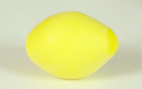
Evde Stres Topu Nasıl Yapılır?
137 izlenme 5 gün önce
-
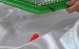
Altıgen Kasnak Tutkal İşlemi
132 izlenme 6 gün önce -
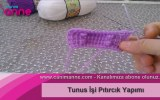
Tunus İşi Pıtırcık Yapımı
86 izlenme 7 gün önce -
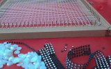
Kasnak İşi Peçetelik Yapımı
86 izlenme 6 gün önce -
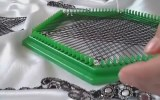
Kasnak İşi Nasıl Yapılır
81 izlenme 6 gün önce -
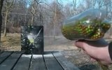
Pet Şişeden Makineli Silah Yapımı
70 izlenme 6 gün önce -
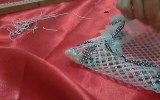
Çivili Kasnak Peçete Yapımı -2
61 izlenme 6 gün önce -
Organze Kurdele İle Çiçek Nasıl Yapılır
33 izlenme 4 gün önce -
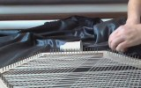
Yarım Yıldız Kasnak Sarma İşlemi
32 izlenme 6 gün önce -
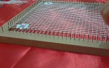
Çivili Kasnak İle Boncuk İşlemesi Nasıl Yapılır
28 izlenme 6 gün önce -
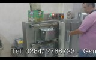
Fındık Fıstık Vakum Makinesi
28 izlenme 5 gün önce -
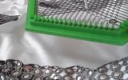
Kasnak İşi Yıldız Modeli Ve Tutkallama İşlemi
26 izlenme 6 gün önce -

Era Jett İle Balık Izgara
26 izlenme 5 gün önce -

Tam Otomatik Adana Kebab Makinesi
25 izlenme 6 gün önce -
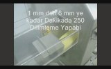
Dilimleme Makinesi
26 izlenme 5 gün önce -
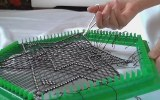
Kasnaktan Model Nasıl Çıkartılır ?
24 izlenme 6 gün önce -
Örgü Üzerine İnci Nasıl Örülür?
18 izlenme 7 gün önce